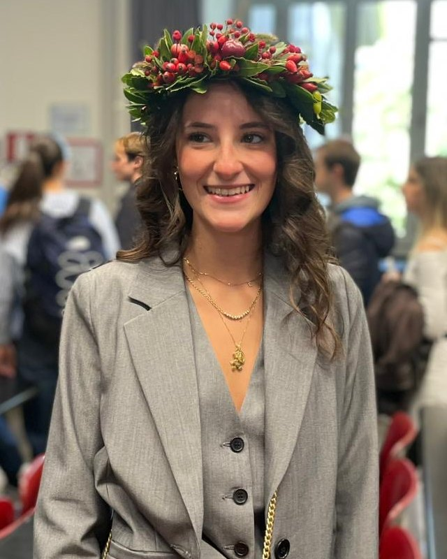

Elena de Sanctis
- Birth city
- Rieti, Italy
- Home university
- Politecnico di Milano
- Current city
- Linköping, Sweden

Education
- Aug 2026 — now
Linköping University
Exchange semester
Linköping, Sweden - Sep 2025 — now
Politecnico di Milano
MSc in Mathematical Engineering, Computational Science and Computational Learning
Milan, Italy - Sep 2022 — Sep 2025
Politecnico di Milano
BSc in Mathematical Engineering
Milan, Italy
Relevant coursework
- Modelling & simulation
- Applied Computational Fluid Dynamics, Computational Fluid Dynamics, Numerical Analysis for PDEs, Advanced Partial Differential Equations
- Computing
- Advanced Programming for Scientific Computing, Algorithms and Parallel Computing
- Life sciences
- Mathematical Models in Biology, Medical Image Analysis
Skills
- Programming
- C/C++, MATLAB, R, LaTeX
- Software
- Ansys Fluent, ANSA, ParaView, HPC clusters (Slurm)
- Languages
- Italian (native), English (B2, Cambridge FCE)
Beyond engineering
- 2020 — now
Leo Club Rieti Host
Youth branch of Lions Clubs International
President 2023/24 · Vice-President 2021/22 - 2022 — now
AIM
Association of Mathematical Engineers, Politecnico di Milano